Para realizar la clonación remota, necesitaremos configurar previamente el pc anfitrión que usaremos como servidor. Estos pasos pueden verse en Preparación
En este caso, en lugar de hacer la clonación en una unidad local, la copia se guardará en un pc remoto
Para los primeros pasos, procederemos igual que en una clonación local
Entramos al menu de clonecilla, mostrando las siguientes opciones
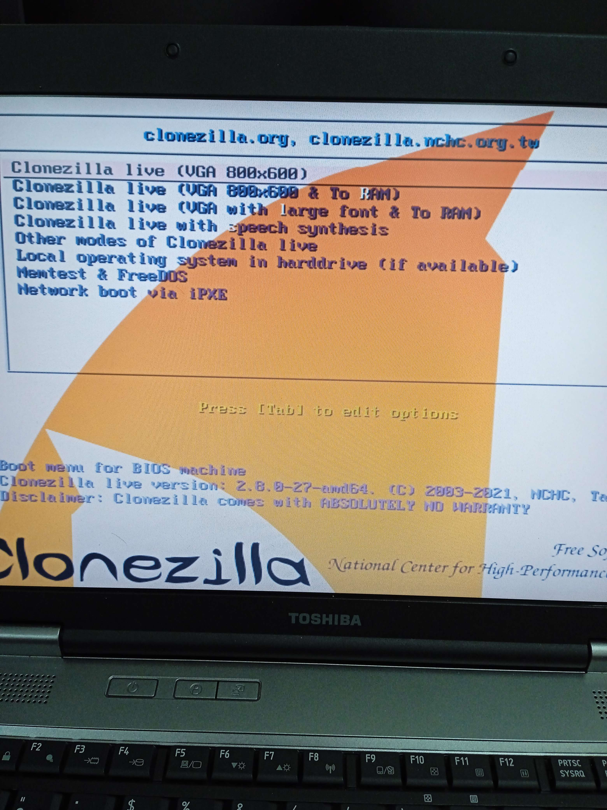Seleccionamos clonezilla Live VGA
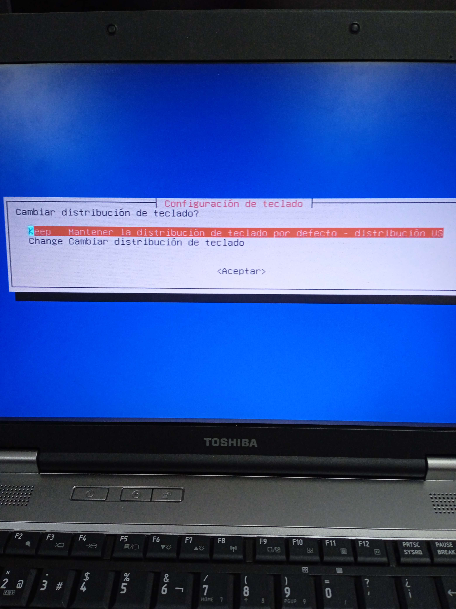El siguiente paso será configurar la distribución de teclado.
Mantendremos la distribución por defecto
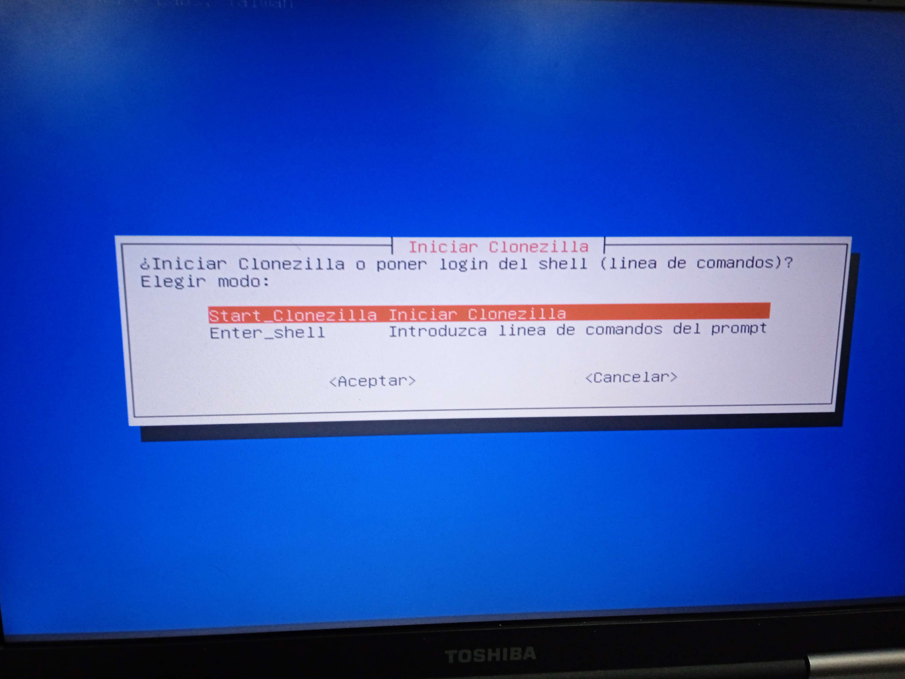
Iniciamos clonezilla
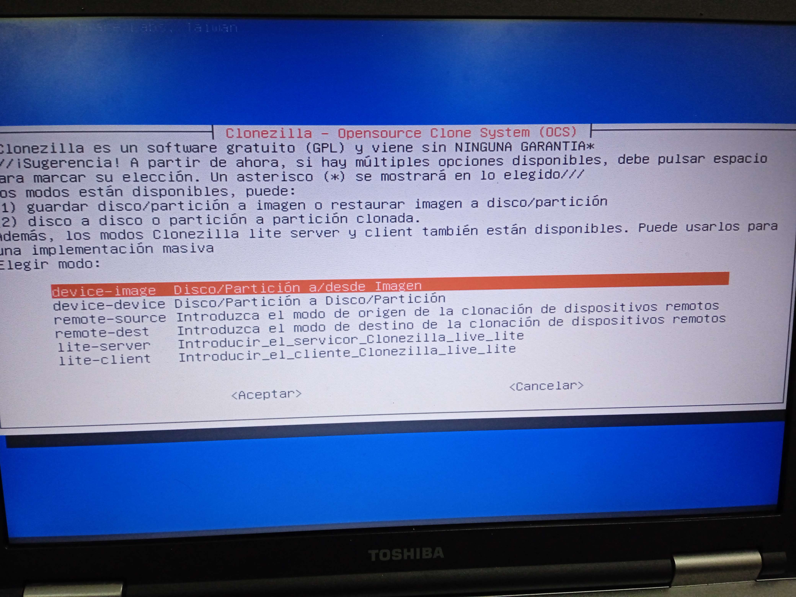Seleccionamos la opción "Disco/Partición a/desde imagen.
Con esta opción podremos clonar nuestra partición (o disco)"
A partir de aquí, es donde se difurca nuestro camino relativo a la clonación local
Seleccionamos Samba Server, lo cual nos permite, mediante Samba, acceder a un dispositivo remoto donde grabar/importar nuestra imagen del sistema
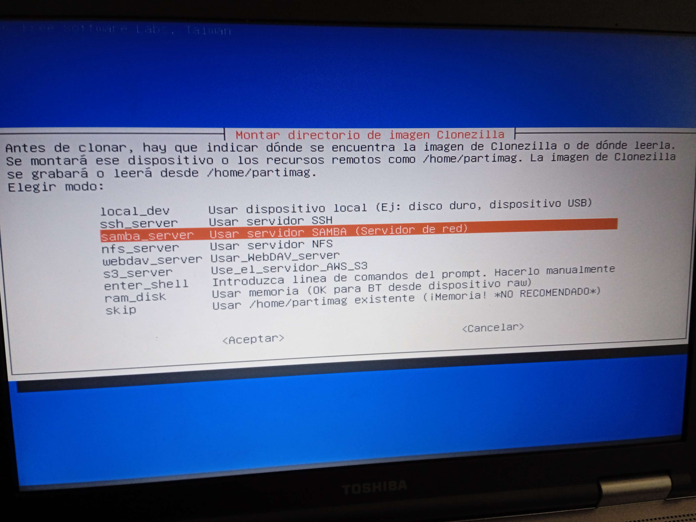Seleccionamos DHCP como nuestro método de transmisión
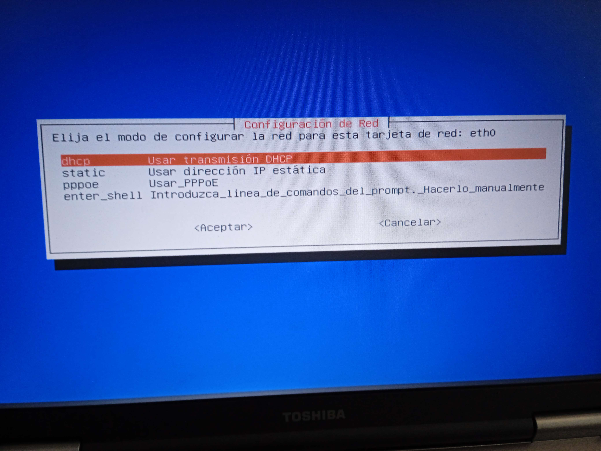Dejaremos que Samba defina automáticamente el protocolo a utilizar
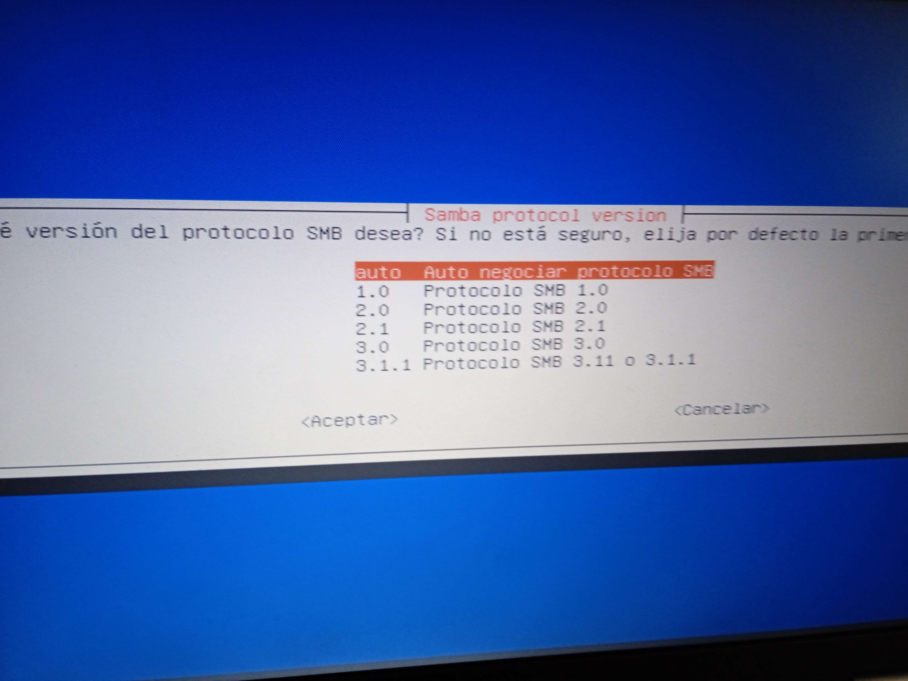Insertamos la dirección ip del equipo que actuará como servidor y donde se alojará la imagen
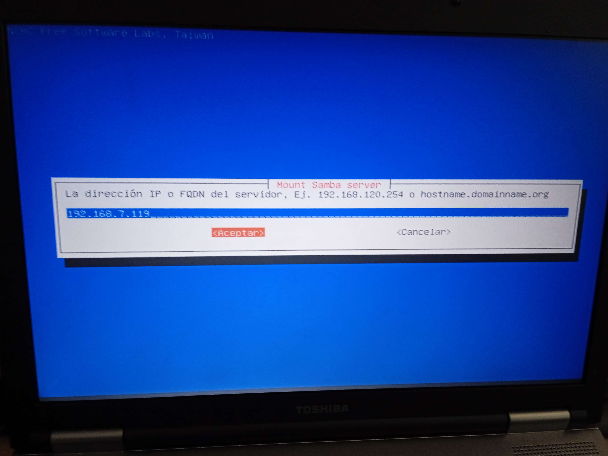Seleccionamos la opción deseada, en este caso, queremos guardar el disco local como imagen
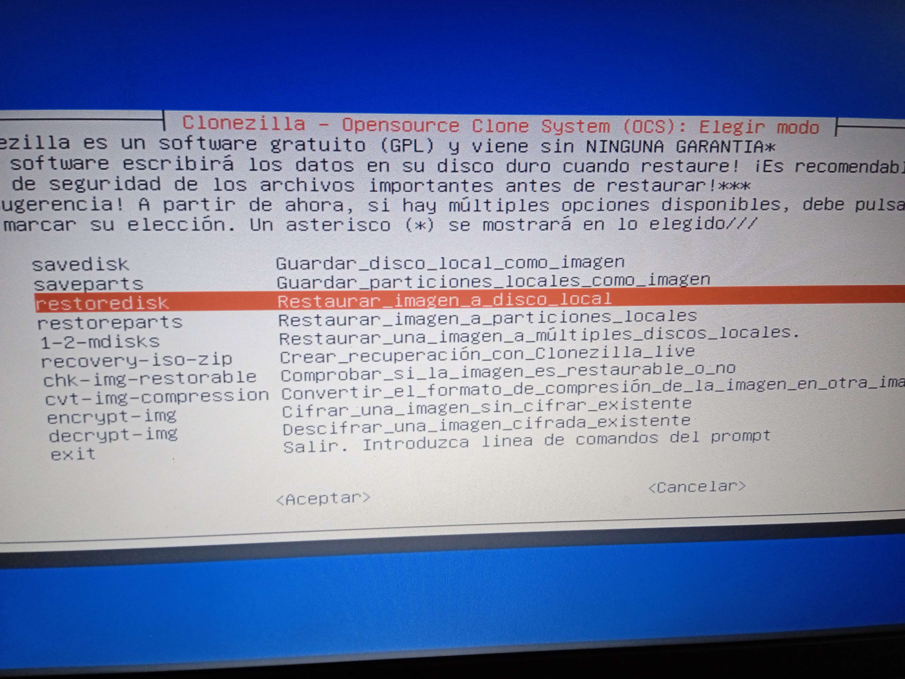Indicamos cual es la imagen que queremos restaurar, en nuestro caso, al haber solamente una imagen, dejaremos la opción por defecto.
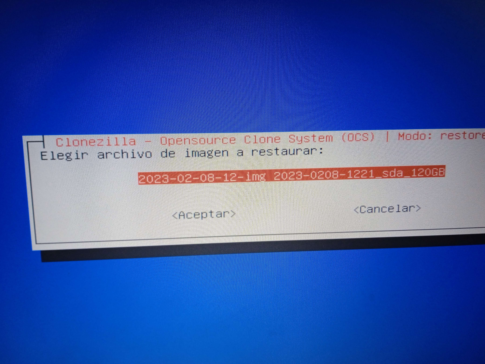En el siguiente paso, nos aparecerán los distintos discos desde los que podemos exportar la imagen. Seleccionamos el que deseemos utilizar.
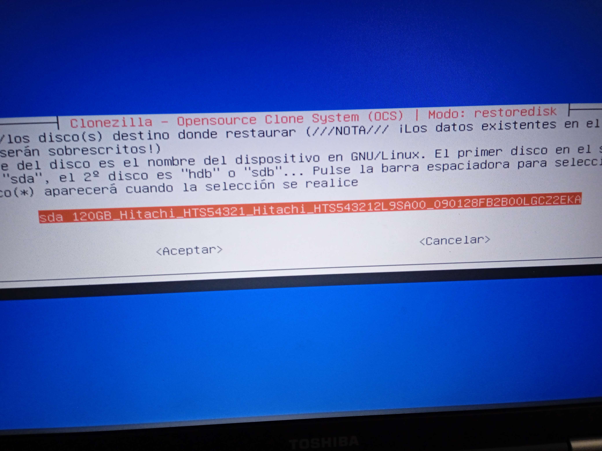De nuevo, y por velocidad, saltaremos la comprobación de la imagen. Si queremos asegurarnos de que la imagen no está corrupta y es restaurable, marcaremos la opción de comprobar.
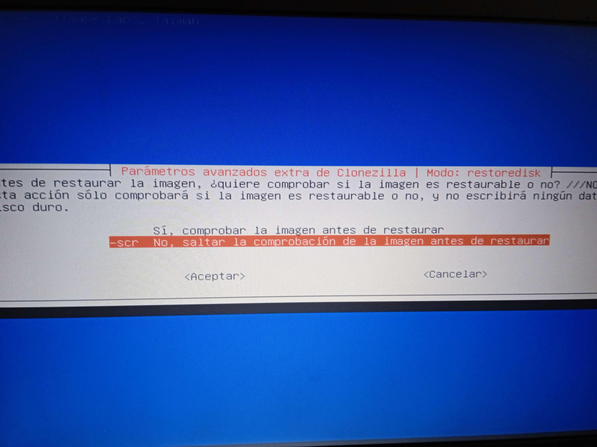Por último, elegimos la opción que queremos ejecutar una vez terminado el proceso. En nuestro caso, marcaremos la primera opción para que, al terminar de exportar la imagen, elijamos la opción que veamos conveniente.
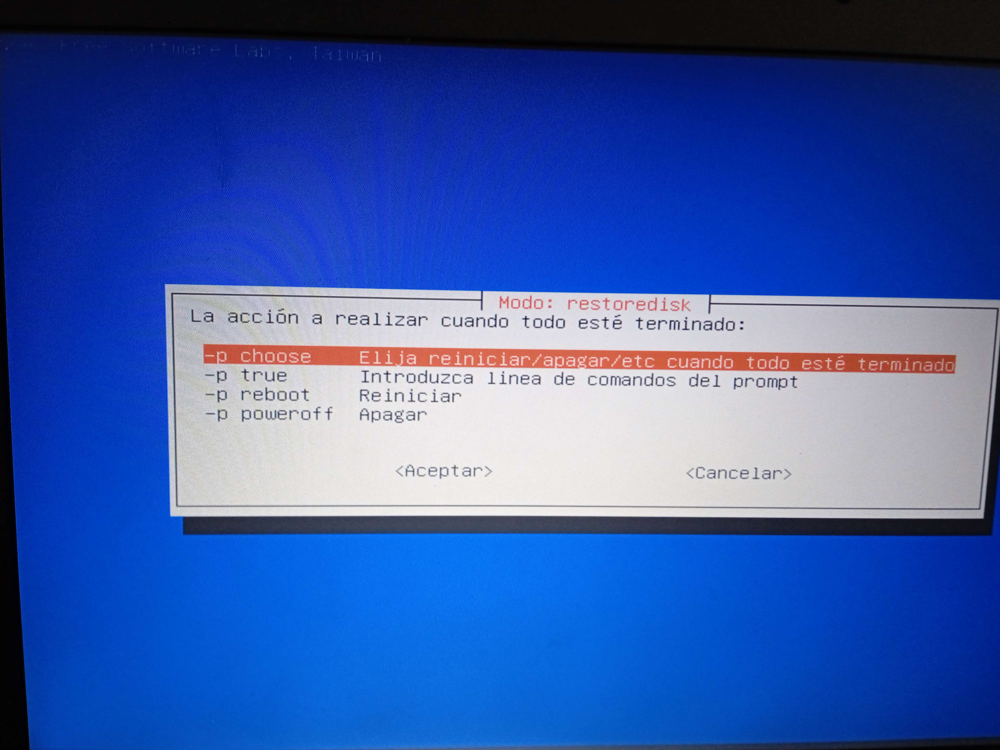